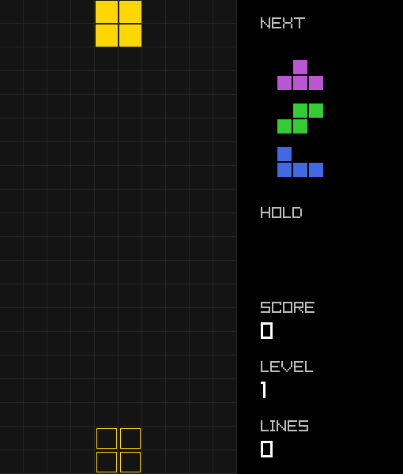

A Tetris clone built entirely in R, following the modern guideline
rules: a 7-bag randomizer, SRS rotation with wall kicks, a ghost piece,
hold, lock delay, and gravity that speeds up every ten lines. The
playfield is an integer matrix, so collision checks and line clears are
plain matrix indexing (board[cells],
rowSums()), and every cell on the board is drawn with a
single vectorized draw_rectangle() call. It demonstrates
combining get_key_pressed() for one-shot actions with
is_key_down() for held keys (delayed auto shift and soft
drop), frame-rate independent timing with get_frame_time(),
and fade() for semi-transparent overlays.

Tetris gameplay
Try it
Click the canvas to focus it.
| Key | Action |
|---|---|
| Left / Right | Move |
| Down | Soft drop |
| Space | Hard drop |
| Up / X | Rotate clockwise |
| Z | Rotate counterclockwise |
| C | Hold |
| P | Pause |
| Enter | Restart after game over |
Run
demo("tetris", package = "raylibr")Source code
library(raylibr)
cols <- 10
rows <- 20
hidden <- 2
scale <- 30
window_size <- c(510, 600)
pieces <- list(
I = matrix(c(0, 0, 0, 0,
1, 1, 1, 1,
0, 0, 0, 0,
0, 0, 0, 0), 4, byrow = TRUE),
O = matrix(c(1, 1,
1, 1), 2, byrow = TRUE),
T = matrix(c(0, 1, 0,
1, 1, 1,
0, 0, 0), 3, byrow = TRUE),
S = matrix(c(0, 1, 1,
1, 1, 0,
0, 0, 0), 3, byrow = TRUE),
Z = matrix(c(1, 1, 0,
0, 1, 1,
0, 0, 0), 3, byrow = TRUE),
J = matrix(c(1, 0, 0,
1, 1, 1,
0, 0, 0), 3, byrow = TRUE),
L = matrix(c(0, 0, 1,
1, 1, 1,
0, 0, 0), 3, byrow = TRUE)
)
piece_colors <- c("cyan", "gold", "mediumorchid", "limegreen",
"red", "royalblue", "darkorange")
# SRS wall kicks as (x, y) offsets with y pointing up, keyed by "from>to"
kick <- function(...) matrix(c(...), ncol = 2, byrow = TRUE)
kicks_jlstz <- list(
"0>1" = kick(0, 0, -1, 0, -1, 1, 0, -2, -1, -2),
"1>0" = kick(0, 0, 1, 0, 1, -1, 0, 2, 1, 2),
"1>2" = kick(0, 0, 1, 0, 1, -1, 0, 2, 1, 2),
"2>1" = kick(0, 0, -1, 0, -1, 1, 0, -2, -1, -2),
"2>3" = kick(0, 0, 1, 0, 1, 1, 0, -2, 1, -2),
"3>2" = kick(0, 0, -1, 0, -1, -1, 0, 2, -1, 2),
"3>0" = kick(0, 0, -1, 0, -1, -1, 0, 2, -1, 2),
"0>3" = kick(0, 0, 1, 0, 1, 1, 0, -2, 1, -2)
)
kicks_i <- list(
"0>1" = kick(0, 0, -2, 0, 1, 0, -2, -1, 1, 2),
"1>0" = kick(0, 0, 2, 0, -1, 0, 2, 1, -1, -2),
"1>2" = kick(0, 0, -1, 0, 2, 0, -1, 2, 2, -1),
"2>1" = kick(0, 0, 1, 0, -2, 0, 1, -2, -2, 1),
"2>3" = kick(0, 0, 2, 0, -1, 0, 2, 1, -1, -2),
"3>2" = kick(0, 0, -2, 0, 1, 0, -2, -1, 1, 2),
"3>0" = kick(0, 0, 1, 0, -2, 0, 1, -2, -2, 1),
"0>3" = kick(0, 0, -1, 0, 2, 0, -1, 2, 2, -1)
)
line_points <- c(100, 300, 500, 800)
rotate_cw <- function(m) t(m[nrow(m):1, , drop = FALSE])
rotate_ccw <- function(m) t(m)[ncol(m):1, , drop = FALSE]
# Board coordinates (row, col) of the cells occupied by a piece
cells <- function(p) {
rc <- which(p$shape == 1, arr.ind = TRUE)
cbind(rc[, 1] + p$pos[1] - 1, rc[, 2] + p$pos[2] - 1)
}
fits <- function(p) {
rc <- cells(p)
all(rc[, 1] >= 1 & rc[, 1] <= nrow(board) &
rc[, 2] >= 1 & rc[, 2] <= cols) && all(board[rc] == 0)
}
moved <- function(p, drow, dcol) {
p$pos <- p$pos + c(drow, dcol)
p
}
spawn <- function(type) {
# Put the top of the piece on the first visible row
shape <- pieces[[type]]
first <- min(which(rowSums(shape) > 0))
list(type = type, shape = shape, rot = 0,
pos = c(hidden + 2 - first, if (ncol(shape) == 2) 5 else 4))
}
next_piece <- function() {
if (length(queue) < 4) queue <<- c(queue, sample(7))
type <- queue[1]
queue <<- queue[-1]
piece <<- spawn(type)
can_hold <<- TRUE
lock_timer <<- 0
lock_resets <<- 0
if (!fits(piece)) game_over <<- TRUE
}
try_move <- function(drow, dcol) {
candidate <- moved(piece, drow, dcol)
if (!fits(candidate)) return(FALSE)
piece <<- candidate
TRUE
}
try_rotate <- function(dir) {
if (piece$type == 2) return(FALSE)
to <- (piece$rot + dir) %% 4
candidate <- piece
candidate$shape <- if (dir == 1) rotate_cw(piece$shape) else rotate_ccw(piece$shape)
candidate$rot <- to
table <- if (piece$type == 1) kicks_i else kicks_jlstz
offsets <- table[[paste0(piece$rot, ">", to)]]
for (i in seq_len(nrow(offsets))) {
kicked <- moved(candidate, -offsets[i, 2], offsets[i, 1])
if (fits(kicked)) {
piece <<- kicked
return(TRUE)
}
}
FALSE
}
# Moving or rotating a resting piece postpones locking, at most 15 times
reset_lock <- function() {
if (lock_resets < 15) {
lock_timer <<- 0
lock_resets <<- lock_resets + 1
}
}
ghost <- function() {
g <- piece
while (fits(moved(g, 1, 0))) g <- moved(g, 1, 0)
g
}
lock_piece <- function() {
board[cells(piece)] <<- piece$type
piece <<- NULL
clearing <<- which(rowSums(board != 0) == cols)
if (length(clearing) > 0) {
clear_timer <<- 0.15
} else {
next_piece()
}
}
clear_lines <- function() {
n <- length(clearing)
board <<- rbind(matrix(0L, n, cols), board[-clearing, , drop = FALSE])
score <<- score + line_points[n] * level
lines_cleared <<- lines_cleared + n
level <<- lines_cleared %/% 10 + 1
clearing <<- integer(0)
next_piece()
}
hold_piece <- function() {
if (!can_hold) return()
type <- piece$type
if (is.na(held)) {
next_piece()
} else {
piece <<- spawn(held)
lock_timer <<- 0
lock_resets <<- 0
if (!fits(piece)) game_over <<- TRUE
}
held <<- type
can_hold <<- FALSE
}
# Seconds per row, levelling off at level 20
gravity <- function() {
l <- min(level, 20)
(0.8 - (l - 1) * 0.007)^(l - 1)
}
new_game <- function() {
board <<- matrix(0L, rows + hidden, cols)
queue <<- sample(7)
held <<- NA
score <<- 0
lines_cleared <<- 0
level <<- 1
fall_progress <<- 0
das_dir <<- 0
das_timer <<- 0
clearing <<- integer(0)
clear_timer <<- 0
game_over <<- FALSE
paused <<- FALSE
next_piece()
}
# Drawing ------------------------------------------------------------------
draw_cells <- function(rc, color, x0 = 0, y0 = -hidden * scale, size = scale) {
if (length(rc) == 0) return()
draw_rectangle(x0 + (rc[, 2] - 1) * size + 1, y0 + (rc[, 1] - 1) * size + 1,
size - 2, size - 2, color)
}
draw_preview <- function(type, x, y, color = piece_colors[type]) {
shape <- pieces[[type]]
shape <- shape[rowSums(shape) > 0, colSums(shape) > 0, drop = FALSE]
size <- 20
x0 <- x + (4 - ncol(shape)) * size / 2
y0 <- y + (2 - nrow(shape)) * size / 2
draw_cells(which(shape == 1, arr.ind = TRUE), color, x0, y0, size)
}
draw_label <- function(text, y, size = 20, color = "gray") {
draw_text(text, 330, y, size, color)
}
draw_overlay <- function(title, subtitle) {
draw_rectangle(0, 0, cols * scale, rows * scale, fade("black", 0.8))
draw_text(title, (cols * scale - measure_text(title, 40)) / 2, 250, 40, "white")
draw_text(subtitle, (cols * scale - measure_text(subtitle, 20)) / 2, 300, 20, "gray")
}
draw_game <- function() {
begin_drawing()
clear_background("black")
# Playfield
draw_rectangle(0, 0, cols * scale, rows * scale, "gray8")
xs <- seq(0, cols * scale, scale)
ys <- seq(0, rows * scale, scale)
draw_line(xs, 0, xs, rows * scale, "gray15")
draw_line(0, ys, cols * scale, ys, "gray15")
filled <- which(board != 0, arr.ind = TRUE)
draw_cells(filled, piece_colors[board[filled]])
if (length(clearing) > 0) {
draw_cells(cbind(rep(clearing, each = cols), seq_len(cols)), "white")
}
if (!is.null(piece)) {
g <- cells(ghost())
draw_rectangle_lines((g[, 2] - 1) * scale + 2, (g[, 1] - hidden - 1) * scale + 2,
scale - 4, scale - 4, piece_colors[piece$type])
draw_cells(cells(piece), piece_colors[piece$type])
}
# Side panel
draw_label("NEXT", 20)
for (i in 1:3) draw_preview(queue[i], 340, 20 + i * 55)
draw_label("HOLD", 260)
if (!is.na(held)) draw_preview(held, 340, 300, if (can_hold) piece_colors[held] else "gray30")
draw_label("SCORE", 380)
draw_label(format(score, big.mark = ","), 405, 30, "white")
draw_label("LEVEL", 455)
draw_label(format(level), 480, 30, "white")
draw_label("LINES", 530)
draw_label(format(lines_cleared), 555, 30, "white")
if (game_over) draw_overlay("GAME OVER", "Press Enter to restart")
if (paused) draw_overlay("PAUSED", "Press P to continue")
end_drawing()
}
# Game loop ----------------------------------------------------------------
init_window(window_size[1], window_size[2], "R & Raylib: Tetris")
set_target_fps(60)
new_game()
while (!window_should_close()) {
dt <- get_frame_time()
while ((k <- get_key_pressed()) != 0) {
if (game_over) {
if (k == key$enter) new_game()
} else if (k == key$p) {
paused <- !paused
} else if (!paused && !is.null(piece)) {
if (k == key$up || k == key$x) {
if (try_rotate(1)) reset_lock()
} else if (k == key$z) {
if (try_rotate(-1)) reset_lock()
} else if (k == key$space) {
while (try_move(1, 0)) score <- score + 2
lock_piece()
} else if (k == key$c) {
hold_piece()
}
}
}
if (!game_over && !paused && length(clearing) > 0) {
clear_timer <- clear_timer - dt
if (clear_timer <= 0) clear_lines()
}
if (!game_over && !paused && !is.null(piece)) {
# Sideways movement with delayed auto shift
dir <- is_key_down(key$right) - is_key_down(key$left)
if (dir == 0) {
das_dir <- 0
} else if (dir != das_dir) {
das_dir <- dir
das_timer <- 0
if (try_move(0, dir)) reset_lock()
} else {
das_timer <- das_timer + dt
while (das_timer >= 0.17) {
das_timer <- das_timer - 0.05
if (try_move(0, dir)) reset_lock()
}
}
# Gravity, twenty times faster while soft dropping. Progress is counted
# in rows so that switching speed never releases a burst of rows.
soft_drop <- is_key_down(key$down)
fall_progress <- fall_progress + dt / (gravity() / if (soft_drop) 20 else 1)
while (fall_progress >= 1) {
fall_progress <- fall_progress - 1
if (try_move(1, 0)) {
if (soft_drop) score <- score + 1
} else {
fall_progress <- 0
}
}
# Lock after resting on the stack for half a second
if (fits(moved(piece, 1, 0))) {
lock_timer <- 0
} else {
lock_timer <- lock_timer + dt
if (lock_timer >= 0.5) lock_piece()
}
}
draw_game()
}
close_window()